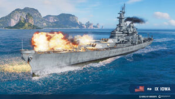
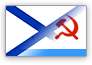
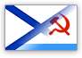

World of Warships Wiki

World of Warships
A World of Warships egy haditengerészeti akció MMO, amely a huszadik század első felének nagyszabású tengeri csatáinak világába merül. Epikus csaták dúlnak a világ óceánjain, hogy győzelmet szerezzenek a többtonnás tengeri óriások korszakának legnagyobb képviselőiből álló csapatok között. A csatában való győzelem elérése érdekében a játékosoknak stratégiák széles skáláját kell alkalmazniuk a különböző taktikai döntésekben. Hirtelen csapások, ravasz oldaltámadások, nyílt összecsapások és „fejes” támadások a kapitányoknak arra kell törekedniük, hogy megtalálják az ideális módot, hogy döntő csapást mérjenek az ellenségre.
A World of Warships taktikai sokszínűsége a hadihajók számos különböző osztályának beépítéséből fakad, beleértve: repülőgép-hordozókat, amelyek képesek távoli légi támogatást nyújtani és extrém hatótávolságú célpontokat ütni; kolosszális csatahajók, amelyek hatalmat sugároznak az óceánok hatalmas sávjaira; könnyű és nehéz cirkálók, amelyek képesek gyorsan reagálni a változó harctéri körülményekre; és lopakodó, agilis rombolók, amelyek rendkívül hatékonyak lehetnek csoportos támadásokban.
Ismertebb Hajók
Bismarck
A Bismarck Németország egyik csatahajója volt a második világháború során, az első egysége a róla elnevezett Bismarck-osztálynak. Egyetlen testvérhajója a Tirpitz volt. Nevét Otto von Bismarck birodalmi kancellár, a német egység megvalósítója után kapta. 1940. augusztusi szolgálatba állításakor a legnagyobb és legerősebb csatahajónak számított.További információ.
Tirpitz
A Tirpitz csatahajó a kéttagú Bismarck-osztály második egysége volt, mely hajókat a Kriegsmarine számára még a második világháború előtt kezdték el építeni. Nevét Alfred von Tirpitzről, a Császári Haditengerészetet (Kaiserliche Marine) kiépítő tengernagyról kapta. Építését 1936-ban kezdték meg, 1939-ben bocsátották vízre és 1941-ben adták át a haditengerészetnek. Testvérhajójához, a Bismarckhoz hasonlóan fő tüzérsége 8 darab 38 cm-es ágyúból, másodlagos tüzérsége pedig 12 darab 15 cm-es ágyúból állt. Az eltérő kaliberű lövegekből álló légvédelmi tüzérségét a háború előrehaladtával többször is megerősítették. A különböző módosítások révén 2000 tonnával vált nehezebbé a Bismarcknál, így a legnagyobb Európában épített csatahajónak számít.További információ.
Jamato
A Jamato (大和, やまと) a Császári Japán Haditengerészet csatahajója, a Jamato osztály névadó hajója volt a második világháború idején. Egyetlen hadrendbe állított testvérhajója a Muszasi.
A csatahajón rendszeresített 46 cm-es nehézlövegek a világ legnagyobb hajóágyúi voltak. A légvédelmi fegyverzet kezdetben nem volt kielégítő. A háború alatti további beépítésekkel végül a Jamatonak 146 db 2,5 cm-es légvédelmi gépágyúja volt. A csatahajó részt vett a második világháború több nagy csendes-óceáni tengeri hadműveletében. Fő erejét, a hatalmas nehéztüzérséget azonban a tengeri háború légi-tengeri háborúvá való átalakulása következtében már alig hasznosíthatták. A Jamatot 1945. április 7-én Kjúsútól délre amerikai repülőgépek süllyesztették el.További információ.
Colbert
A háború utáni tervek szerint a francia haditengerészetnek hat AA védelmi cirkálót kellett volna fogadnia, de végül csak kettőt építettek. Az egyiket a De Grasse hajótest felhasználásával, míg a másikat a semmiből építették hasonló terv szerint. A projekt számos módosítást tartalmazott, beleértve a csökkentett keresztmetszetet, nagyobb hajótest szélességet és egy új páncélrendszert. Colbert Brestben épült. Az 1960-as évek első felében a hajó a Mediterrán Squadron zászlóshajójaként szolgált, 1970 és 1972 között pedig rakétacirkálóvá építették át.További információ.
Montana
Az USS Illinois az Egyesült Államok Haditengerészetének ötödik Iowa osztályú csatahajója volt, illetve a negyedik hajó, amit a 21. állam után neveztek el.
A hajó törzsét eredetileg az első Montana osztályú csatahajó törzsének szánták, de a második világháború miatti változások eredményeképp Iowa osztályú hajóként folytatták az építést. A csatahajó számos tekintetben jobb lett így, mint ha megmaradtak volna a Montana osztály tervei mellett. Ilyen előny volt például, a nyolc csomóval nagyobb sebesség, a több 20 és 40 mm-es légvédelmi ágyú vagy a Panama-csatornán való átkelés képessége. Másfelől a nagyobb fegyverekből kevesebbet tudtak a hajóra rakni, illetve a USS Montana-ra tervezett erősebb páncélzat sem épült meg.További információ.
North Carolina

Az amerikai csatahajók új generációjának bevezető sorozata, amelyet az 1930-as évek közepén kezdtek el tervezni. Elsődleges előnyük a "hagyományos" csatahajókkal szemben a jelentősen megnövelt sebességben és az erősebb légvédelmi rendszerben rejlik. A második világháború alatt a USS North Carolina aktív szerepet játszott a Csendes-óceáni hadműveletekben, és részt vett olyan bevetésekben, mint a Kelet-Salamonok csatája, a Fülöp-tengeri csata és az okinavai partraszállás. A háború során a hajót 12 harci csillaggal tüntették ki.További információ.
Des Moines

A USS Des Moines (CA-134) az Egyesült Államok haditengerészetének ( USN) nehézcirkálóinak osztályának vezető hajója volt . Ő volt az első USN-hajó, amely felszerelte az automatikusan töltődő 8 hüvelykes (203 mm-es) Mark 16 fegyvereket , a világ első nagy kaliberű öntöltő fegyvereit. Ő volt az USN második hajója, amelyet Des Moines város , Iowa fővárosa nevével állítottak üzembe . 1946-ban bocsátották vízre, 1948-ban helyezték üzembe. A világ minden tájáról látott szolgálatot egészen 1961-ben történt leszereléséig, amikor is végleg lesújtott.További információ.
Iowa

A USS Iowa (BB-61) egy nyugdíjas csatahajó , osztályának vezető hajója , és a negyedik az Egyesült Államok haditengerészetében, amelyet Iowa államról neveztek el . A Montana osztályú csatahajók törlésének köszönhetően az Iowa az utolsó vezető hajó az Egyesült Államok csatahajóinak bármely osztályában, és osztályának egyetlen hajója, amely az Atlanti-óceánon szolgált a második világháború alatt .További információ.
Franklin D. Roosevelt
A USS Franklin D. Roosevelt (CVB/CVA/CV-42) a második volt a három Midway osztályú repülőgép-hordozó közül . A legénysége " Swanky Franky ", " Foo-De-Roo " vagy " Rosie " néven volt ismert, valószínűleg az utolsó becenévvel a legnépszerűbb. Roosevelt aktív bevetési pályafutása nagy részét a Földközi-tengeren töltötte az Egyesült Államok hatodik flottájának részeként .További információ.
Smolensk

Az 1950-ben kifejlesztett előzetes könnyűcirkáló projektek között szerepelt egy négy négyágyús, 130 mm-es BL-132-es tartóval felfegyverzett hajó. Neki volt a legnagyobb tüzérségi tűzereje egy tonnánkénti elmozdulásra, és ígéretes lehetőségnek tartották a rábízott feladatok megoldására. A termelési létesítményekre nehezedő nagy terhelés és a vezetés szkepticizmusa a még gyártásra nem kész fegyverzetű hajók építésével kapcsolatban azonban megakadályozta e tervek megvalósulását. További információ.
Játékmódok
Co-op Battle
Egy kooperatív csatában egy csapat játékos mérkőzik meg számítógép által vezérelt botok csapatával. Azokban az esetekben, amikor nincs elég hajó a sorban a megfelelő szint teljes játékának megkönnyítéséhez, botok segítségével egészítik ki az emberi játékosokból álló csapatot. A robotokat a nevük előtt és után kettőspontok jelölik (például ":Hipper:"). A kooperatív játék során szerzett kredit- és tapasztalatjutalmak jelentősen alacsonyabbak, mint a véletlenszerű csatákban szerzett jutalmak.
Random Battles
A Random Battles a legnépszerűbb csatatípus a World of Warships-ben. A kapitányok beleesnek egy játékba, amely tele van más játékosokkal, a matchmaking rendszer szerint. A véletlenszerű csaták többsége 12v12 csata; azonban időnként a partnerkereső szoftver kisebb játékokat hoz létre (például 7v7 vagy 9v9). A játékosok egyénileg állnak sorba a véletlenszerű csatákra, és a meccskereső rendszer véletlenszerűen helyezi őket a csapatokba, kizárólag a kiválasztott hajó szintje és típusa alapján; a játékos képességeit nem veszik figyelembe. A hitel- és tapasztalati jutalmak nagymértékben megnövekednek a kooperatív csatákban.
Division
A forgatókönyvek egy játékos csapatot állítanak szembe a számítógép által vezérelt ellenfelek egyre nehezebb hullámaival egyedi célokat szolgáló műveletekben. A játékosok egyedül állhatnak sorba, de arra bátorítjuk őket, hogy gyűjtsék össze barátaikat egy osztályba, hogy megpróbáljanak forgatókönyveket; egy 7 játékosból álló teljes divízió összeállítása nagyban növeli a siker esélyeit. A minimális osztálylétszám 4 játékos. A kredit és tapasztalat jutalmak a véletlen csatákhoz hasonlíthatók, ha minden célt teljesítenek, de lényegesen kisebbek, ha nem teljesítik az összes másodlagos célt.
Ranked
A rangsorolt csaták csak meghatározott időpontokban érhetők el, és bizonyos szintű hajókra korlátozódnak. A Ranked Battles tipikus "szezonja" néhány hétig tart, és a játékosok egy ladder-stílusú rangsorolási rendszerben haladnak felfelé a magas rangról (például "10. helyezett") az alacsony rangra, ahol az 1. rang a ranglétra csúcsa. A játékosok egyénileg állnak sorba a rangsorolt csatákra, és a meccskereső rendszer véletlenszerűen helyezi őket a csapatokba, hasonlóan ahhoz, ahogyan a Random Battle párkeresés történik; a Ranked Battle matchmaking azonban úgy van csoportosítva, hogy a játékosok összeállnak hasonló rangú játékosokkal – és játszanak ellenük. A kredit és tapasztalati jutalmak megegyeznek a Random Battles során szerzett jutalmakkal.
Clan Battles
A rangsorolt csatákhoz hasonlóan a kláncsaták csak meghatározott időpontokban érhetők el, és bizonyos hajószintekre korlátozódnak. Egy csapatot egy klánon belül legalább egy tiszt alkot. A játékosok csapatként állnak sorba a kláncsatákra, és egy hasonló minősítésű csapattal mérik össze őket, amely szintén a sorban áll.
Limitált Játékmódok
Űr Csata

A mód kilenc egyedi bőrű Tier X hajó közül választhat, mindegyik egy még egyedibb kapitánnyal. A gazdasági jutalmak azonban egyenértékűek a Tier VII meccsekkel, és csak az adott módban elért eredményeket lehet megszerezni.
Asszimetrikus Csata
Ideiglenes típus, amelyben néhány magasabb szintű hajó több alacsonyabb szintű hajóval harcol. Az eltérő szintű hajók részvételének kiegyensúlyozása érdekében a belépés csatajelzők elköltésével történik.

 
